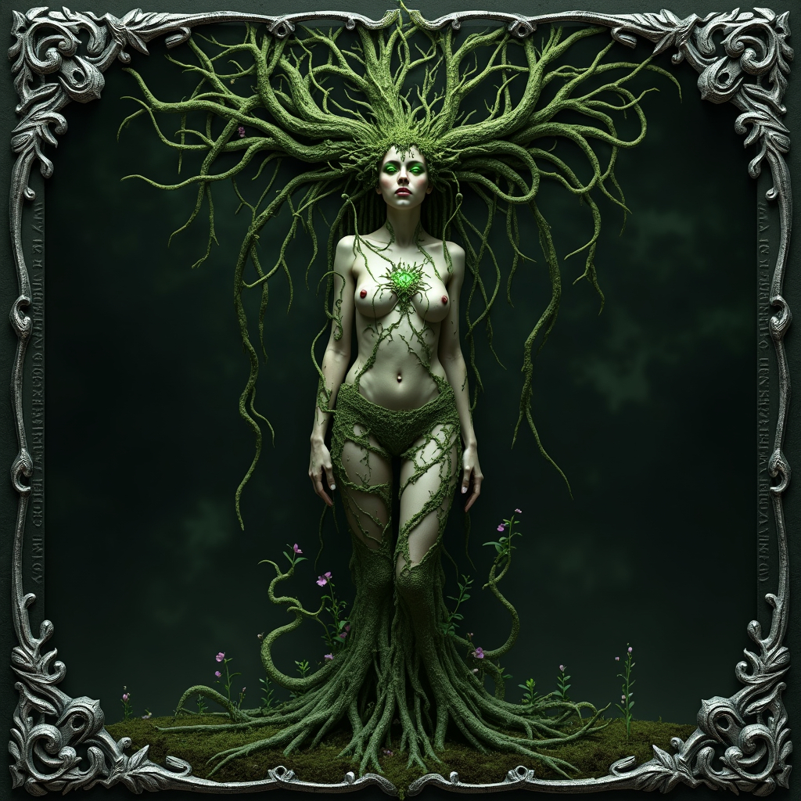

Than
Than, the ancient and enigmatic forest deity of Skazka, is a primal
force of nature whose worship predates most known religions in the
world. Revered almost exclusively within the mysterious woodland realm
of Ku’Than, Than embodies the untamed spirit of the earth, meting out
merciless vengeance on those who defile the sacred Elden Wood. Oft
depicted as a horned figure with a face that communes through trees,
Than’s presence is deeply felt rather than widely seen. Her priests
and priestesses, known simply as Witches, are nurtured from childhood
and tested through a brutal rite of survival before earning their
place as guardians of the forest. Governed by the secretive Council of
Than and led by High Witch Serona, the people of Ku’Than live in
harmony with nature’s harsh order, believing their living forest to be
both sanctuary and sentinel — perhaps even a prison to some ancient
force. Outside their dark and shifting woods, Than’s influence is
rare, yet when a Witch emerges, it is a sign that something of great
consequence stirs within the green heart of Skazka.